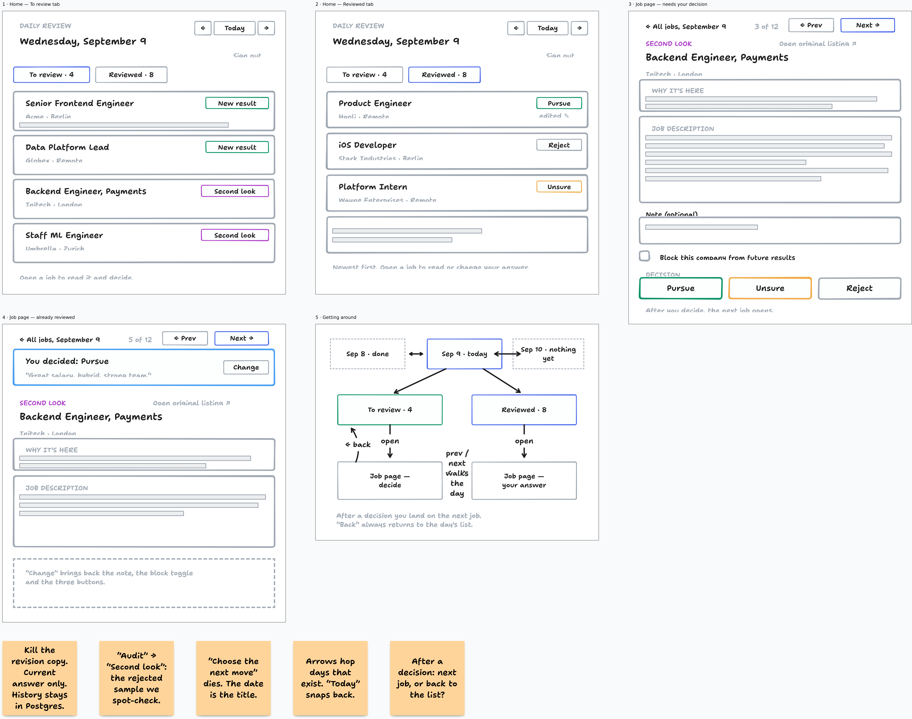

Navigation, redrawn
The review app had no way back. You could open a reviewed job and get stuck there; reviewed items hid in a collapsed footnote; switching days meant typing a URL. This is the first sketch of the fix, drawn before touching code. Argue with the layout, not the pixels.
The board

What this fixes
- No way back. Every job page now carries a breadcrumb, ← All jobs, September 9, plus Prev/Next that walk the whole day, pending and reviewed alike, with a 3 of 12 position marker.
- Reviewed items were a footnote. They get their own tab, newest first, each row showing its decision chip. Open any of them to read or change your answer.
- Days were a URL hack. The header has ← and → arrows that hop to the previous or next day that actually has a review, a Today button, and the date itself opens a picker. Empty days keep the existing empty state.
- One card at a time became a list you control. The queue is visible. You pick where to start and what to skip, instead of being served one job the pipeline chose.
Copy calls
“Every revision below is kept as a new entry; the latest one counts.”
Gone. It explains the database to someone who asked about a job. The page shows the current answer, You decided: Pursue, the note under it, and a Change button that reopens the form. Every submission still lands as its own immutable row in Postgres; the UI never says so. If we ever need the history, it is one query away, and it stays out of sight until then.
“Audit” → “Second look”
“Audit” is our internal lane name, and it leaked. What the lane actually is: a sample of rejected jobs, kept so the filter cannot silently drop good ones. Second look says what you do with it. If you hate it: “Spot check” or “Rejected sample” work too. The internal rejected_audit lane id does not need to change.
“Choose the next move”
Gone. The date is the page title. The list says what is left. The job page just asks for a decision. A slogan above a form is noise.
Open questions
- After you decide, jump straight to the next job, or return to the list? The board assumes next job; the list is one ← away either way.
- Tab names: To review / Reviewed, or something shorter like New / Done?
- “Second look” — right name for the rejected-sample lane?
- Should reviewed rows also preview the note, or is the decision chip enough?
- Keep Block this company on the main form, or tuck it behind the note field?